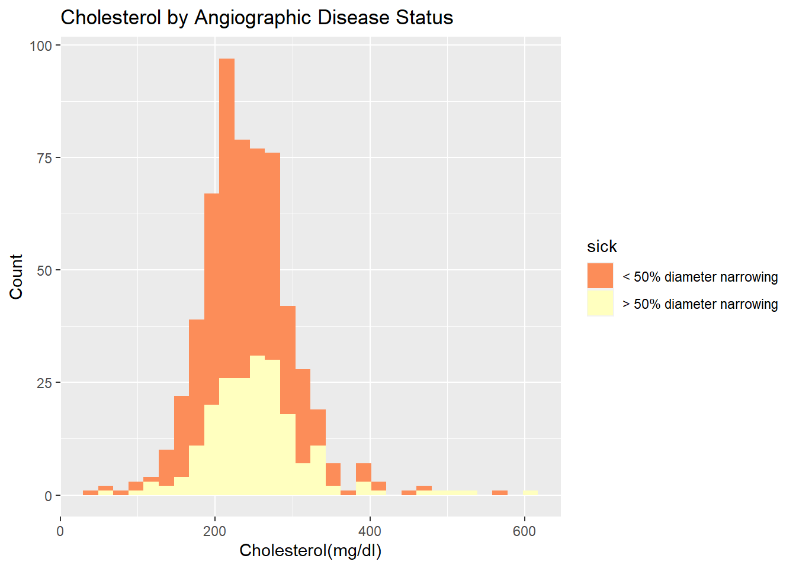
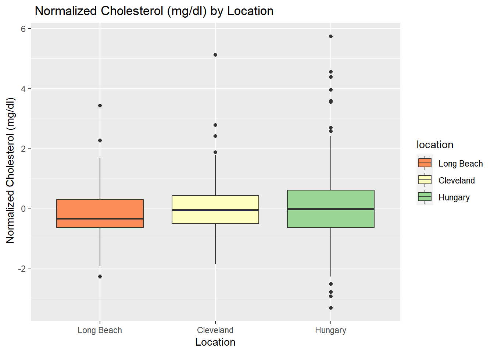
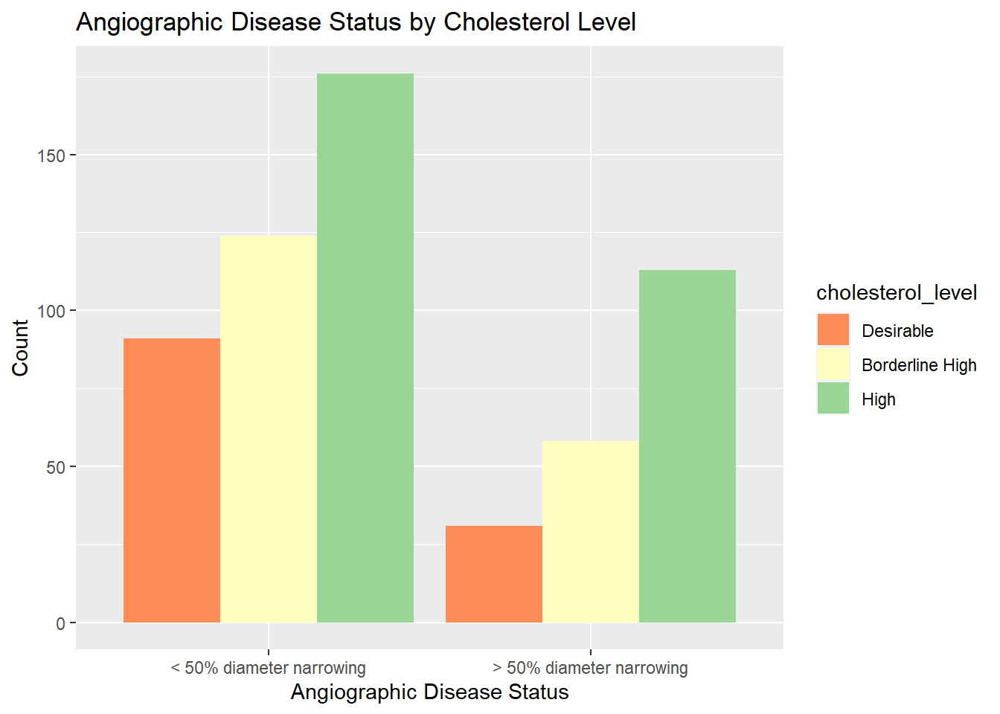
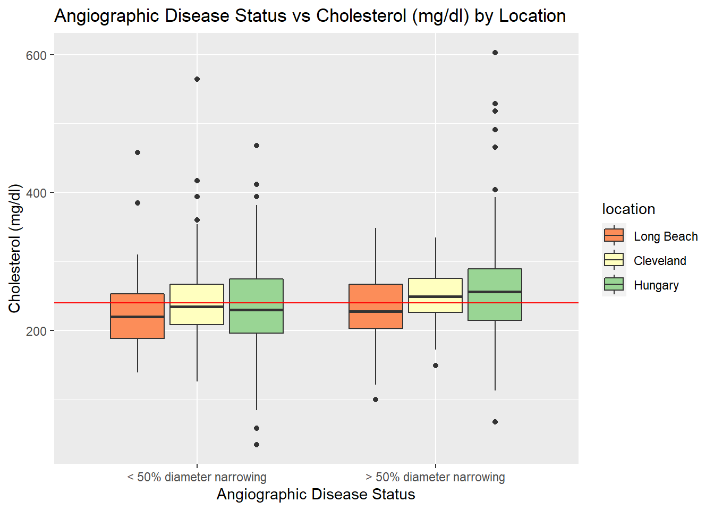
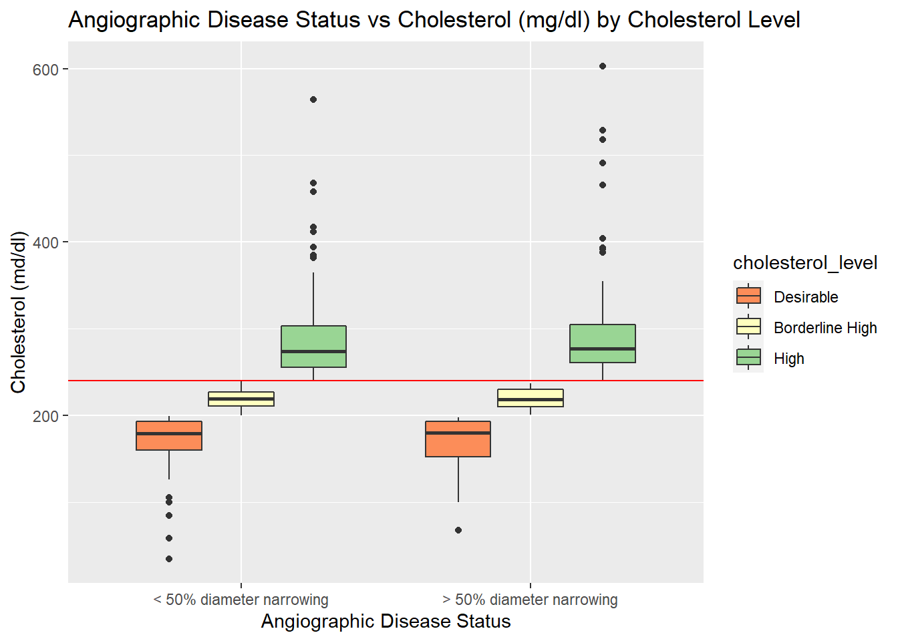

Heart Disease is a major problem people across the world, whether it be from minor heart problems all the way to life threatening heart conditions. Many heart diseases can be congenital, but many are also brought on by our lifestyle, such as eating habits. Cholesterol, is a substance found in nearly every cell of our body, but also found in many foods we ingest like meat and dairy products. Our body needs cholesterol in order to function correctly, but as saying goes “too much of something, is sometimes not good for you!” Too much cholesterol, or high cholesterol can lead individuals to have a higher risk of heart disease in the arteries. In this study, we will be using the UCI Heart Disease Dataset in order to determine whether patients suffering from heart disease due to the narrowing of the diameter of the arteries is associated with high cholesterol.
The data set in this study comes from the UCI Heart Disease Dataset, which contains samples from three specific areas around the world: Cleveland, Ohio in the USA, Long Beach, California in the USA, Zurich and Basel in Switzerland and finally Budapest, Hungary. Note that while the Switzerland dataset is processed in this analysis, it is essentially removed from the merged dataset as they did not have any cholesterol records in their dataset. This data set contains 14 different attributes, of which information is provided about each column below:
age: Age in years
sex: (1 = male; 0 = female)
cp: Chest pain type (0 = asymptomatic; 1 = atypical angina; 2 = non-anginal pain; 3 = typical angina)
trestbps: Resting blood pressure (in mm Hg on admission to the hospital)
cholserum: Cholestoral in mg/dl
fbs: Fasting blood sugar > 120 mg/dl (1 = true; 0 = false)
restecg: Resting electrocardiographic results (0= showing probable or definite left ventricular hypertrophy by Estes’ criteria; 1 = normal; 2 = having ST-T wave abnormality (T wave inversions and/or ST elevation or depression of > 0.05 mV))
thalach: Maximum heart rate achieved
exang: Exercise induced angina (1 = yes; 0 = no)
oldpeakST: Depression induced by exercise relative to rest
slope: The slope of the peak exercise ST segment (0 = downsloping; 1 = flat; 2 = upsloping)
ca: Number of major vessels (0-4) colored by flourosopy
thal: 1 = normal; 2 = fixed defect; 3 = reversable defect
num: num: diagnosis of heart disease (angiographic disease status)
– Value 0: < 50% diameter narrowing
– Value 1: > 50% diameter narrowing
(in any major vessel: attributes 59 through 68 are vessels)
For this study, we are mainly interested in whether high cholesterol is associated with the narrowing of the diameter of the arteries in heart disease patient.
Our sub priorities in the study is to see whether:
1. Do certain locations have a higher instance of cholesterol levels in their patient samples?
2. Do certain locations have a higher instance of the narrowing of the diameter of the arteries in their patient samples when compared to others?
3. Is there an association between resting blood pressure and cholesterol levels?
I downloaded the processed datasets for each location from the UCI Heart Disease database. From here, I took the data from each location, appended a location column to identify the location for each sample, and then merged the datasets into one data frame. Once merged, I imputed the missing data values using the Amelia library. After data imputation, I removed data that did not follow the angiographic disease status format described in their metadata document, and created a categorical variable for Cholesterol Levels following the U.S. Department of ehalth and Human Services guidelines, in which they state that total cholesterol levels below 200 (mg/dl), between 200 to 239 (mg/dl) is borderline high, and 240 (mg/dl) or higher is deemed as having high cholesterol levels. After cleaning data, I followed the Exploratory Data Analysis (EDA) protocol to extract key variables and visualize the data to address the questions for the study.
# > 240 = high
# 200 to 239 = borderline high
# <200 is desirable
# based on US Department of Health and Human Services, Mayo Clinic and Cleveland Clinic Standards
data[cholserum < 200, cholesterol_level := "Desirable"]
data[cholserum >= 200 & cholserum < 240, cholesterol_level := "Borderline High"]
data[cholserum >= 240, cholesterol_level := "High"]
data[, .(
min_cholserum = min(cholserum),
max_cholserum = max(cholserum),
number_obv = .N
), by = cholesterol_level] %>%
knitr::kable(col.names= c("Cholesterol Level", "Minimum Cholesterol Level (mg/dl)", "Maximum Cholesterol Level (mg/dl)", "Number of Observations"), caption="Cholesterol Level Categories")| Cholesterol Level | Minimum Cholesterol Level (mg/dl) | Maximum Cholesterol Level (mg/dl) | Number of Observations |
|---|---|---|---|
| Desirable | 34.93722 | 199 | 122 |
| Borderline High | 200.00000 | 239 | 182 |
| High | 240.00000 | 603 | 289 |
f1<- data[!is.na(sick) & !is.na(cholesterol_level)] %>%
ggplot() +
geom_histogram(mapping=aes(x=cholserum, fill = sick))+
labs(title = "Cholesterol by Angiographic Disease Status", x= "Cholesterol(mg/dl)", y="Count") +
scale_fill_brewer(palette = "Spectral")
The figure above is a stacked histogram that displays the distribution of Cholesterol by Angiographic Disease Status. The figure displays the distribution of Cholesterol by Angiographic Disease Status categories, with the x-axis being the Cholesterol values and the y-axis being the count. From this stacked histogram, we can see that both categories for Angiographic Disease Status are slightly skewed right. Moreover, from this plot, we can see that the majority of the data set is made up of individuals in which less than 50% of their coronary arteries are narrowing, meaning they probably do not suffer from heart disease, while only a subset portion of the data set are individuals with greater than 50% of their coronary arteries being narrowed, i.e. they probably have heart disease.
data_norm <- data %>% mutate_each_(list(~scale(.) %>% as.vector),vars = c("cholserum"))## Warning: `mutate_each_()` was deprecated in dplyr 0.7.0.
## Please use `across()` instead.
## This warning is displayed once every 8 hours.
## Call `lifecycle::last_lifecycle_warnings()` to see where this warning was generated.f2<-data_norm[!is.na(location) & !is.na(cholserum)] %>%
mutate(location=fct_reorder(location, cholserum, na.rm=TRUE)) %>%
ggplot() +
geom_boxplot(mapping=aes(x=location, y=cholserum, fill=location))+
labs(title = " Normalized Cholesterol (mg/dl) by Location", x= "Location", y=" Normalized Cholesterol (mg/dl)") +
scale_fill_brewer(palette = "Spectral")
The graph above depicts a boxplot of Normalized Cholesterol (mg/dl) by Location, with the x-axis being the Location from which the samples were obtained from and the y-axis being the the normalized cholesterol levels. From the graph, we can see that the median normalized cholesterol for Hungary and Cleveland are quite similar, while the Long Beach dataset seems to have a much lower median than the rest. Moreover, it seems that the distributions of Cleveland and Long Beach are quite similar, while Hungary seems to have a slightly larger distribution.
The graph above depicts a bar chart of Location by Cholesterol Level, with the x-axis being the Location from which the samples were obtained from and the y-axis being the count. From the graph, we can see that the majority of each location is made up of individuals with high cholesterol, while a very small portion have the desirable level of cholesterol. Moreover, for each location, the order of the cholesterol level category in terms of count proportion seems to be maintained in this order from largest to smallest: High, Borderline High, and Desirable.
f3 <- data[!is.na(sick) & !is.na(cholserum)] %>%
mutate(cholesterol_level=fct_reorder(cholesterol_level, cholserum, na.rm=TRUE)) %>%
ggplot() +
geom_bar(mapping=aes(x=sick, fill =cholesterol_level), position="dodge")+
labs(title = "Angiographic Disease Status by Cholesterol Level", x= "Angiographic Disease Status", y="Count") +
scale_fill_brewer(palette = "Spectral")
The graph above depicts a bar chart of Angiographic Disease Status by Cholesterol Level, with the x-axis being the the angiographic disease status of the samples and the y-axis being the count. From the graph, we can see that the majority of disease status is made up of individuals with high cholesterol, while a very small portion have the desirable level of cholesterol. Moreover, for each angiographic disease status, the order of the cholesterol level category in terms of count proportion seems to be maintained in this order from largest to smallest: High, Borderline High, and Desirable.
## `stat_bin()` using `bins = 30`. Pick better value with `binwidth`.


{-}
data[!is.na(sick) & !is.na(cholserum)] %>%
mutate(location=fct_reorder(location, cholserum, na.rm=TRUE)) %>%
ggplot() +
geom_boxplot(mapping=aes(x=sick, y=cholserum, fill=location))+
labs(title = "Angiographic Disease Status vs Cholesterol (mg/dl) by Location", x= "Angiographic Disease Status", y="Cholesterol (mg/dl)") +
scale_fill_brewer(palette = "Spectral") +
geom_hline(yintercept = 240, color="red")
The graph above depicts a boxplot of Angiographic Disease Status vs Cholesterol (mg/dl) by Location, with the x-axis being the Angiographic Disease Status and the y-axis being the Cholesterol (mg/dl), and a red reference line for the 240 (mg/dl) Cholesterol level mark. From the graph, we can see that the in both angiographic disease status, Hungary make up a majority of the samples. However, the median for each location between each disease status differs a bit. In the disease status in which patients had less than 50% diameter narrowing of their coronary arteries, the medians between the locations is about the same. But in the disease status in which patients coronary arteries had greater than 50% diameter narrowing, the median for Hungary in their cholesterol levels is higher than both Cleveland and Long Beach. Overall, the patients from all locations that had greater than 50% diameter narrowing of their coronary arteries had higher cholesterol levels than those patients with less than 50% diameter narrowing of their coronary arteries. From this plot, we can infer that it seems patients with a disease status of having their coronary arteries more than 50% diameter narrowing have higher cholesterol levels than the disease status group with less than 50% coronary artery diameter narrowing. Meaning, that patients with heart disease tended to have higher cholesterol levels than those without. This makes sense since high cholesterol is thought of as a risk factor for heart disease, as high cholesterol will cause fatty deposits to develop in the blood vessels. When these fatty deposits grow, it causes blockages, causing a narrowing of the arteries, making it very hard to pump blood through the arteries, i.e. causing heart disease.
data[!is.na(sick) & !is.na(cholserum)] %>%
mutate(cholesterol_level=fct_reorder(cholesterol_level, cholserum, na.rm=TRUE)) %>%
ggplot() +
geom_boxplot(mapping=aes(x=sick, y=cholserum, fill=cholesterol_level))+
labs(title = "Angiographic Disease Status vs Cholesterol (mg/dl) by Cholesterol Level", x= "Angiographic Disease Status", y="Cholesterol (md/dl)") +
scale_fill_brewer(palette = "Spectral") +
geom_hline(yintercept = 240, color="red")
The graph above depicts a boxplot of Angiographic Disease Status vs Cholesterol (mg/dl) by Cholesterol Level, with the x-axis being the Angiographic Disease Status and the y-axis being the Cholesterol (mg/dl),and a red reference line for the 240 (mg/dl) Cholesterol level mark. From the graph, we can see that the in both angiographic disease status, patients with high cholesterol make up the majority of the samples. From the last figure we saw that there was a difference in the cholesterol levels and the angiographic disease status. However, with looking at this graphic, we see that the median cholesterol values for each cholesterol level category, are nearly the same between both angiographic disease status categories and in between the cholesterol level categories. This points towards the idea that potentially high cholesterol is not necessarily highly associated with heart disease or in this case, the narrowing of the diameter of the arteries.
Based on the preliminary results described above, we can conclude that there is not a high association between high cholesterol levels and the narrowing of the diameter of heart diseased patients. Based on location, it seems that patients with narrow arteries have a higher cholesterol count, especially in Hungary. However, by Cholesterol category Levels, it seems that there is no real difference in the cholesterol levels between all the cholesterol level categories and the angiographic disease status categories.